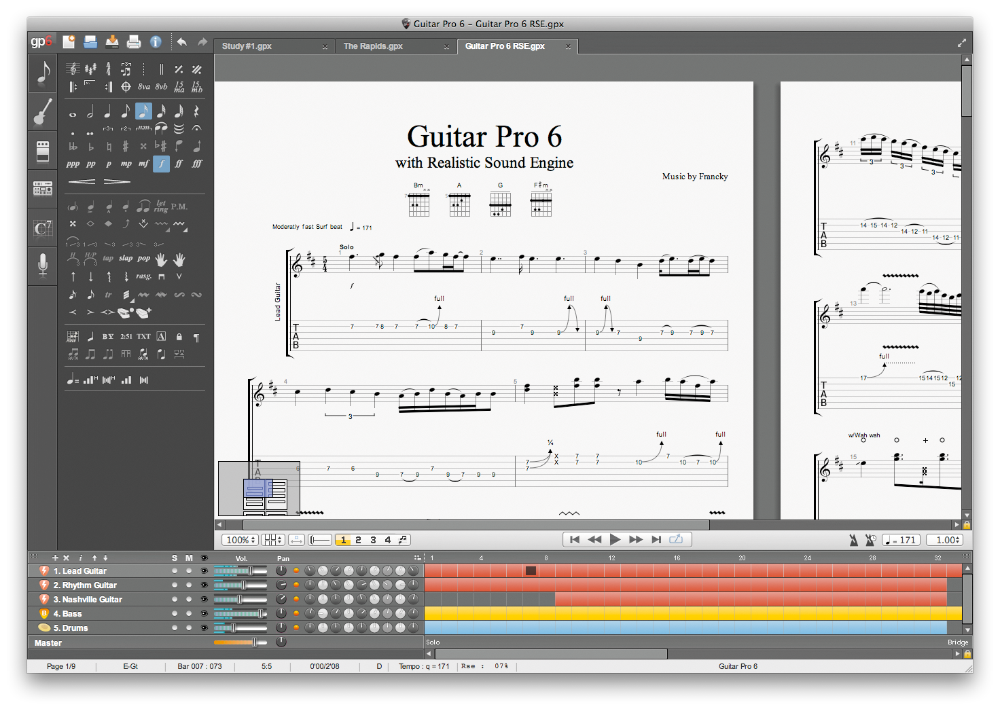
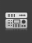
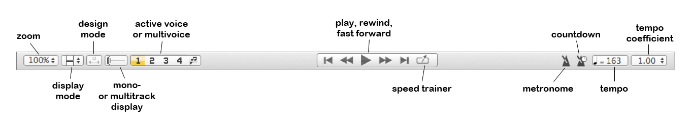
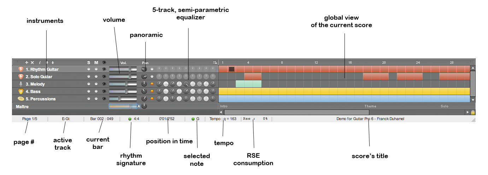

Enth‰lt alle Symbole für die Eingabe einer Partitur, sowohl in Tabulaturnotation als in Slash. Klicken Sie einfach auf einen Knopf, damit das entsprechende Attribut einer Note oder dem ausgew‰hlten Noten zugewiesen wird (für Symbole, für denen Pr‰zision erfordert ist, õffnet sich ein Fenster, um das gewünschte Symbol zu attribuieren), sehen Sie unter Hinzufügen von Symbolen.
Diese Welt kann verschiedene Parameter der Spur einstellen, wie Stimmung, Kapodaster, Spielinterpretation, usw.
Diese Welt kann die gewünschten Effekte einer Piste hinzufügen und Effektketten aufnehmen (Guitar Pro bietet mehr als 70 Modelle von Effekten und Verst‰rkern). Siehe Ton konfigurieren .

Diese Welt kann das Signal-Prozess am Ausgang des Mischers bearbeiten mit Effekten/Verzierungen wie Komprimierung, EQ, Reverb. Siehe Ton konfigurieren.
Diese Welt kann eine Bibliothek von Akkord-Diagrammen erstellen durch das Akkord-Fenster und kann sie mit einem einzigen Klick dem aktuellen Anschlag zuordnen.
Diese Welt kann Songtexte auf der Melodie-Spur bearbeiten, die Texte passen sich automatisch ein, wenn Sie die Texte hinzufügen, sehen Sie Texte Hinzufügen.
Sie kõnnen w‰hlen, die Partitur im Seite-Modus (1 oder 2 Seiten in der Breite) zu sehen, im Scroll-Modus, horizontal oder vertikal oder im Vollbild-Modus. Es gibt mehrere Zoom-Einstellungen, einem Browser am unteren Rand der Partitur links (den man ausblenden kann im Menü Ansicht > Explorer anzeigen) kann sich schnell in der Partitur bewegen. Siehe Ansicht konfigurieren.

Dieser Teil des Fensters ermõglicht Ihnen, Lautst‰rke, Panning und Equalizer und Status der Spuren (Mute, Solo) zu visualisieren. Sie kõnnen auch die Spuren w‰hlen, die Sie sehen wollen, in der Mehrspur -Anzeige dank der kleinen Augen, die sich nach den Attributen Solo-und Mute befinden. Der rechte Teil, der gesamten Ansicht heisst, bietet einen umfassendenüberblicküber die Takten und Abschnitten. Sie kõnnen auf die Takte klicken, um direkt auf einen Takt der Partitur zu gelingen; es ist auch mõglich, eine Multi-Auswahl in der Gesamtansicht zu machen (nützlich für Kopieren/Einfügen von Takten). Siehe Ton Konfigurieren und Sich in der Partitur bewegen.

Die Statusleiste zeigt Informationenüber die aktuelle Partitur wie Titel der Partitur, Autor, aktuelle Position (Takt, Spur und Zeit seit dem Beginn des Songs vergangen ist, Namen der Note, auf der Sie gerade sind), den Namen der aktiven Spur, die Seitenzahl, das aktuelle Tempo, den CPU-Verbrauch vom RSE und schliefllich Angabe der Dauer des aktiven Takts. Durch die Positionierung der Maus auf das Feld Name der Note und Dauer des aktiven Takts, ein Tooltip zeigt an, ob ein Fehler aufgetreten ist, und was dieser Fehler ist (Hammer on zwischen zwei identischen Noten, Noten auflerhalb des Bereichs, 5 Viertelnoten auf einem 4 / 4 Takt ...).
Dies ist eine der groflen Neuheiten von Guitar Pro 6: es ist mõglich, bis zu 8 Dateien gleichzeitig zu õffnen, was die Arbeit beim Versionning, Kopieren/ Einfügen zwischen verschiedenen Dateien, und in der Regel die Arbeit auf verschiedene Stücke, erleichtert. Geõffnete Dateien werden in einer neuen Registerkarte gesetzt und werden durch die Registerkarten oderüber das Menü Ansicht w‰hlbar. Sehen Sie Erstellen einer neuen Partitur.